Locked in Darknes

Locked in Darkness is a cooperative puzzle game where two players take on the role of kidnapped friends trying to escape from a mysterious location. The game focuses on teamwork, communication, and solving interconnected puzzles under pressure.
Players must work together to uncover clues, interact with the environment, and coordinate their actions in order to progress. Each mechanic is designed to reinforce cooperation and shared problem-solving.
Project Collaboration ▾
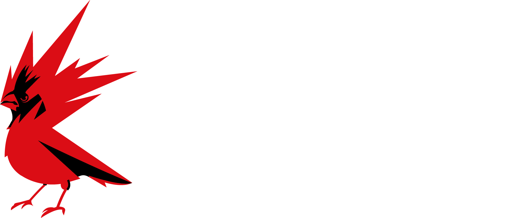
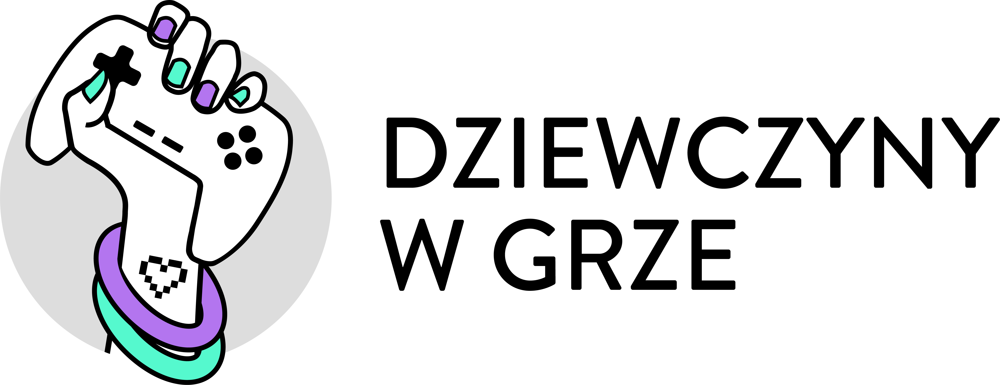
Project Overview
This project was developed as part of the Girls in Games initiative, in collaboration with CD PROJEKT RED and under the mentorship of Przemysław Machniewski.
The primary objective was to explore multiplayer game development, focusing on real-time synchronization, networking architecture, and cooperative gameplay using Unity Netcode.
My Role
Gameplay & Multiplayer Programmer
Responsibilities ▾
Gameplay & Networking
My primary responsibility was implementing multiplayer gameplay systems while ensuring stable synchronization between two players.
- Multiplayer implementation using Unity Netcode
- Two-player synchronization
- Player movement
- Data validation
- State machine implementation
Game Systems
In addition to networking, I designed several gameplay systems that formed the foundation of the cooperative experience.
- System architecture design
- Inventory system
- Interaction system
- Puzzle system structure
- Support for environmental scene creation
Technologies Used ▾
- Unity
- Netcode for GameObjects
- C#
Codebase ▾
Source code for the multiplayer gameplay systems, networking architecture, player interactions, and cooperative mechanics developed for Locked in Darkness.
Assets/_Game/Scripts/Networking
Assets/_Game/Scripts/Riddles
Assets/_Game/Scripts/Game Architecture
Please switch to the Riddles branch (or the appropriate feature branch) to see the latest implementation.
Development Notes ▾
Project Challenges
Developing a cooperative multiplayer game introduced a completely different set of technical challenges compared to my previous projects. The focus shifted from standalone gameplay systems to scalable architecture, networking, and synchronization between multiple players.
- Designing a clean and scalable project architecture capable of supporting multiplayer gameplay while keeping systems modular and easy to maintain.
- Separating puzzle logic from presentation, ensuring that gameplay rules remained independent from the user interface and visual representation.
- Learning Unity Netcode and implementing reliable synchronization of player actions, object states, and interactions across the network.
- Handling ownership and data validation to prevent inconsistent game states between connected players.
How We Solved It
We invested significant time in planning the project's architecture before implementing gameplay systems. This allowed us to build features on top of a solid foundation while keeping the codebase modular and easier to extend.
- We designed architecture that clearly separated scene management, game controllers, and networking responsibilities, creating a scalable foundation for the project.
- Puzzle systems were built using Scriptable Objects, separating puzzle data from gameplay logic and UI. This made individual puzzles reusable, easier to maintain, and independent of their visual implementation.
- Multiplayer functionality was implemented using Unity Netcode, with synchronized player movement, interactions and object states across connected clients.
- Continuous testing helped identify synchronization issues early and improve the overall stability of the networking systems.
What I Would Do Differently
Looking back, I would spend even more time defining the networking architecture before implementing gameplay systems. Although the overall architecture worked well, several gameplay features required additional adjustments once multiplayer synchronization was introduced.
This project significantly improved my understanding of multiplayer programming, software architecture, and designing systems that remain maintainable as complexity grows. It also showed me how important it is to separate gameplay logic, networking, and presentation from the very beginning of development.
Curious how Locked in Darkness was created? The video below documents the development process, from the first prototype to the final playable version.
Gameplay Video ▾
Gallery ▾


Download ▾
Download the latest playable Windows build of the project.
Events & Showcases ▾
CD PROJEKT RED Visits & Workshops
2023The collaboration with CD PROJEKT RED included a series of visits and workshops that supported the development of our project from its early stage. The first meeting marked the official start of the project, followed by regular sessions focused on both technical and soft skills development.
Each workshop covered different aspects of game development, including production pipelines, teamwork, communication, and design practices, helping us better understand how professional game studios operate in a real production environment.
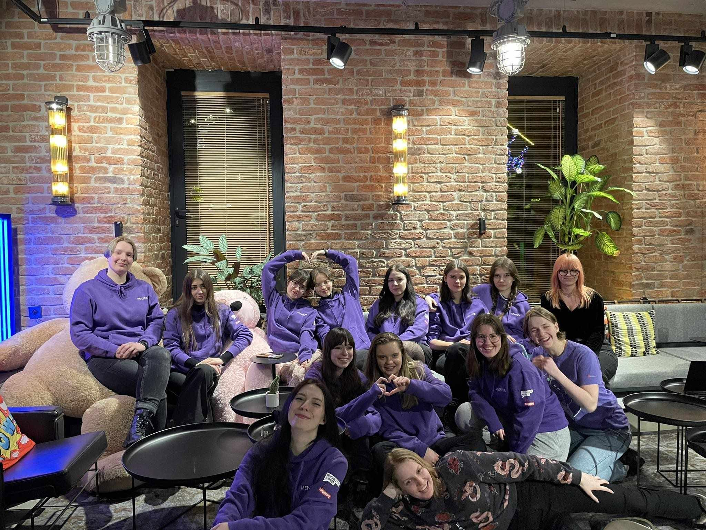
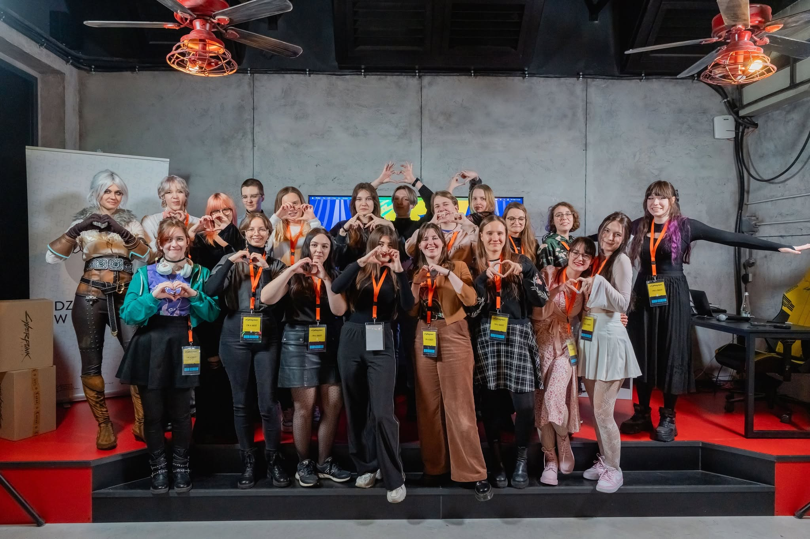
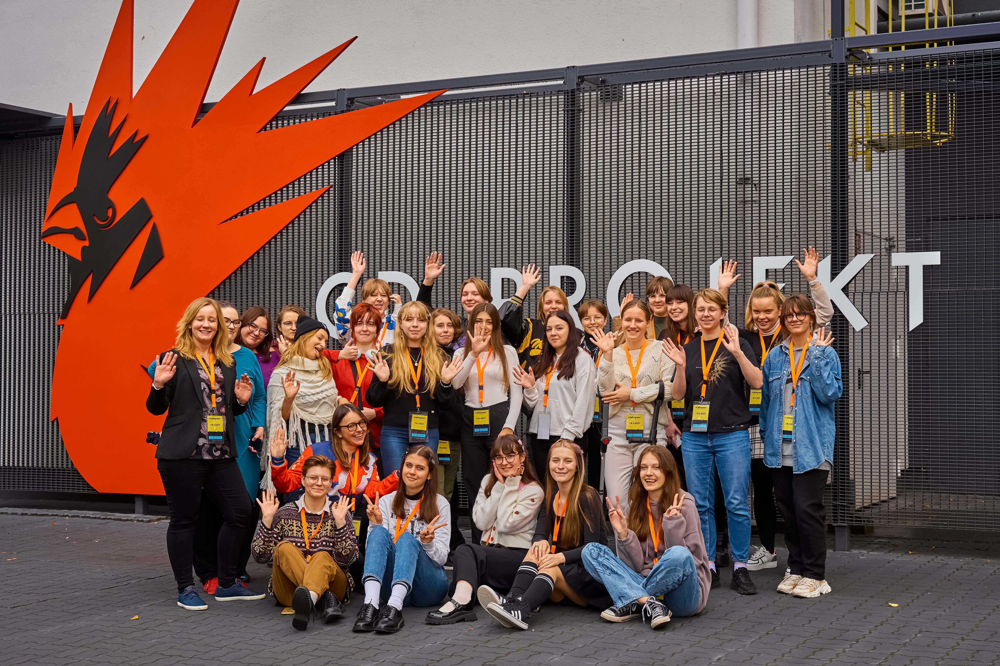
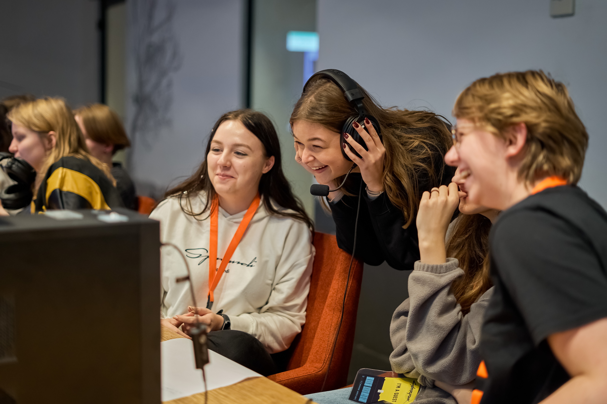
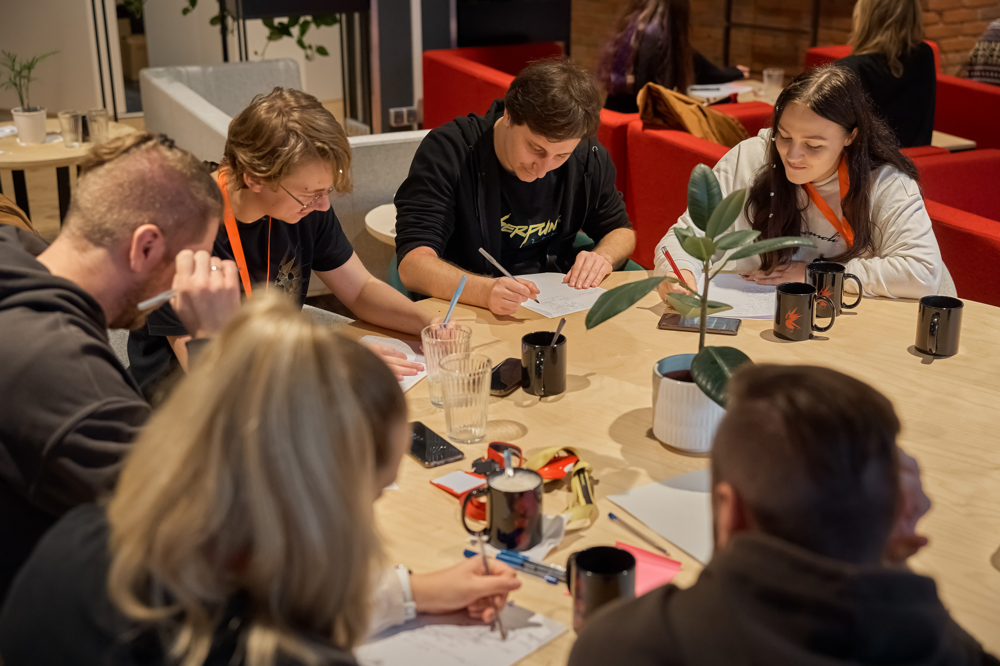
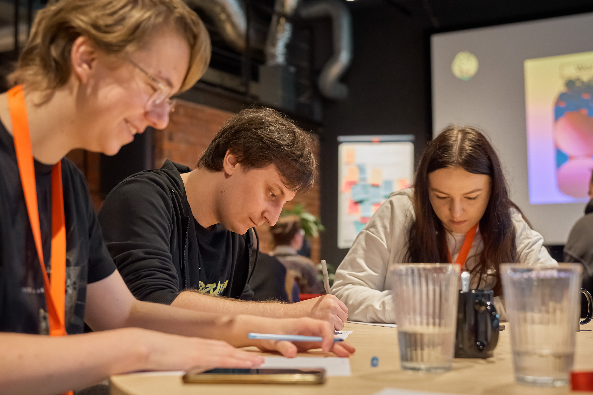
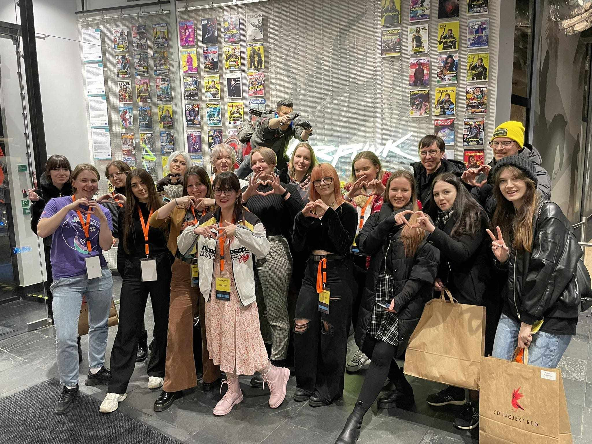
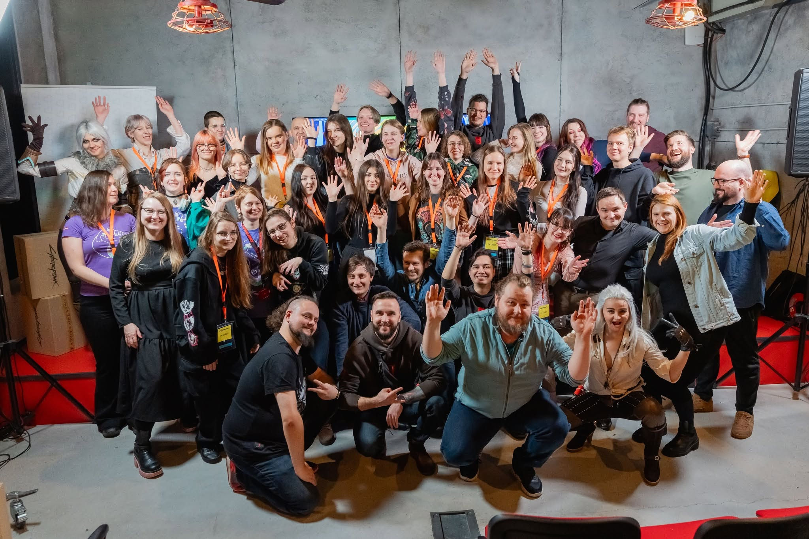
Women in Tech Summit
2023I had the opportunity to participate in the Women in Tech Summit, which featured a wide range of talks and workshops led by industry professionals. It was one of my first large international events in English, making it both a professional and personal challenge.
The experience helped me improve my communication skills in an international environment while gaining insight into different areas of technology and game development.

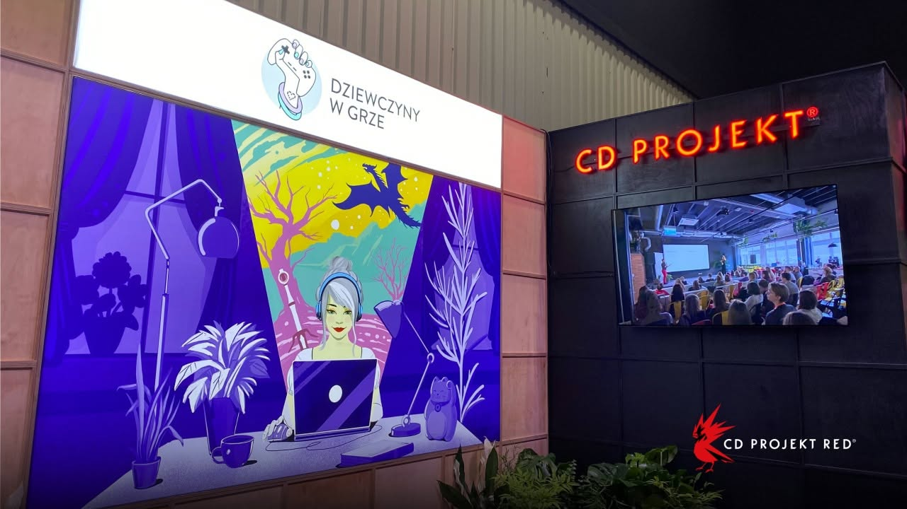

Promised Land Festival
2023I participated in the Promised Land Festival, where I attended a series of talks and workshops focused on game development and the creative industry. The event brought together professionals from different fields, providing valuable insight into industry practices.
It was also an opportunity to further develop my soft skills and gain a broader perspective on working in the game development industry.
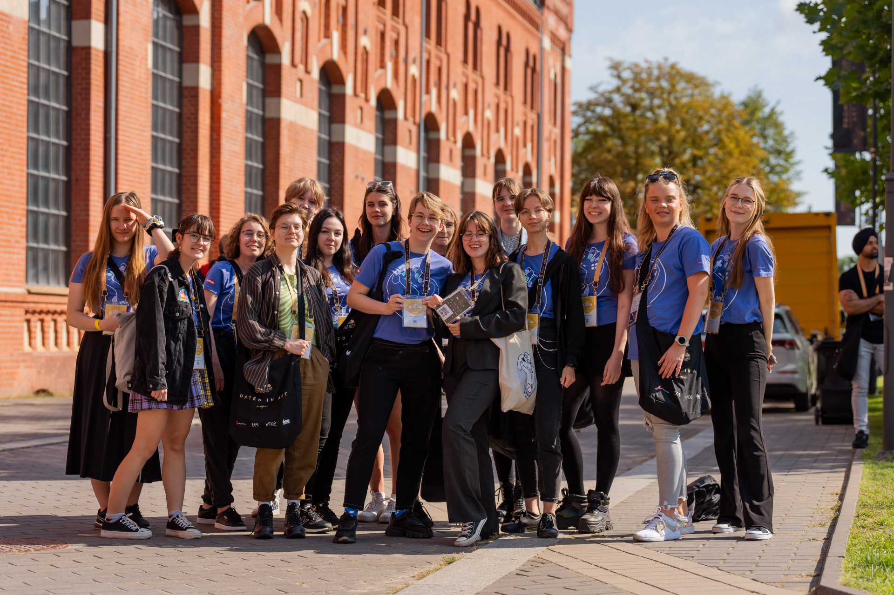
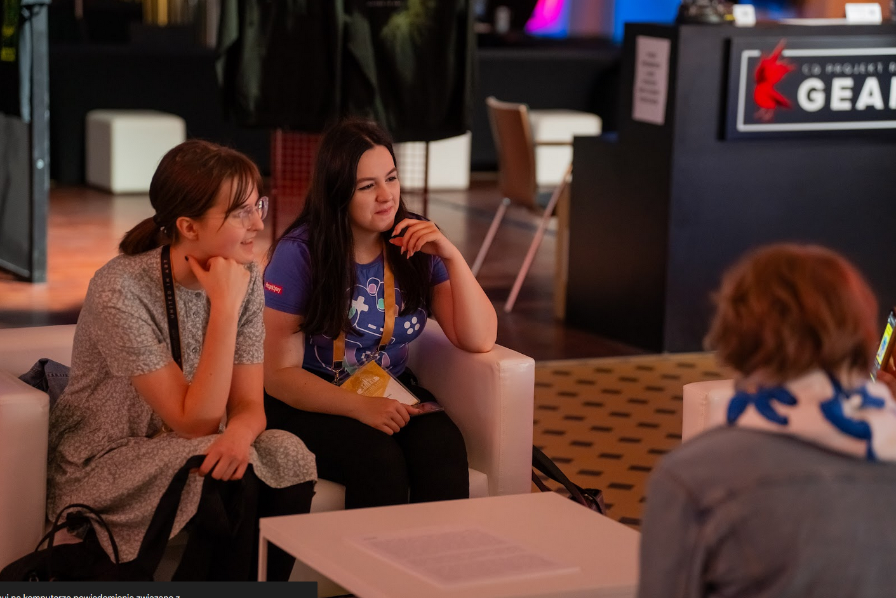
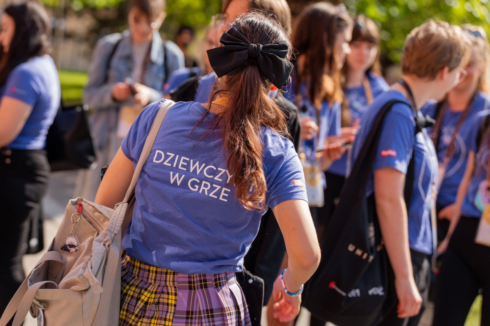